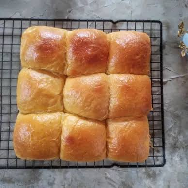
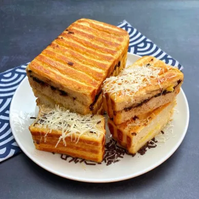

Selamat Datang di Roti Nusantara!
Nikmati kelembutan dan kelezatan roti buatan rumahan dengan bahan-bahan pilihan berkualitas. Dipanggang segar setiap hari untuk menemani pagi dan waktu santai Anda.
Lihat MenuDaftar Menu & Harga
Berikut adalah daftar roti favorit yang siap dipesan:
| No | Nama Roti | Deskripsi | Harga | Aksi |
|---|---|---|---|---|
| 1 | Roti Sobek Cokelat | Roti lembut dengan lelehan cokelat premium | Rp 25.000 | |
| 2 | Roti Bakar Keju Susu | Perpaduan keju melt dan susu kental manis | Rp 18.000 | |
| 3 | Croissant Butter | Pastry renyah berlapis dengan butter asli Prancis | Rp 22.000 |
Galeri Kelezatan Kami


Hubungi Kami
Pesan sekarang melalui WhatsApp atau ikuti media sosial kami untuk promo terbaru!